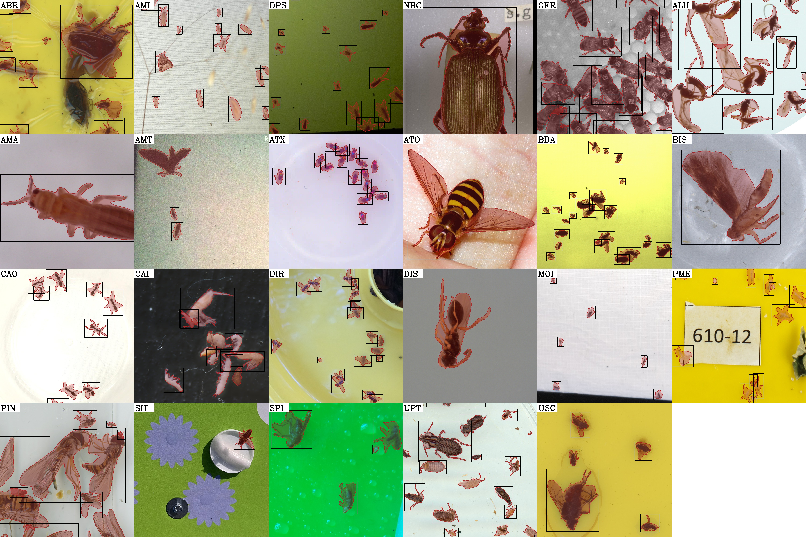

flat-bug¶
Detection and segmentation of terrestrial arthropods in images.
flat-bug finds every arthropod in an image and outlines it, whatever the image: a sticky card, a pitfall-trap tray, a camera-trap frame, a museum drawer, a 500-megapixel scan. One model covers them all. It is tuned for animals seen from above on a more or less flat surface, hence the name.

flat-bug is two things:
A predictor that runs a segmentation model over a pyramid of overlapping tiles, so it sees animals of a few pixels and of thousands of pixels in the same image, at any image size, and merges what it finds into one set of outlines.
A model zoo and the dataset behind it: a compilation of annotated datasets from traps, scanners, cameras and collections, and the models trained on them. See Models.
Quick start¶
uv pip install flat-bug --torch-backend=auto
fb_predict -i my_images/ -o results/
Each image gets a folder with the outlines as JSON, an overview image and a crop of every animal. The user guide has the details.
Cite flat-bug¶
If flat-bug is useful in your work, please cite the paper:
Svenning, A., Mougeot, G., Alison, J., Chevalier, D., Chavez Molina, N., Ong, S.-Q., Bjerge, K., Carrillo, J., Høye, T. T., & Geissmann, Q. (2026). A general method for detection and segmentation of terrestrial arthropods in images. Methods in Ecology and Evolution, 17(3), 727–739. doi:10.1111/2041-210X.70249
@article{svenning2026flatbug,
title = {A general method for detection and segmentation of terrestrial arthropods in images},
author = {Svenning, Asger and Mougeot, Guillaume and Alison, Jamie and Chevalier, Daphne and
Chavez Molina, Nisa and Ong, Song-Quan and Bjerge, Kim and Carrillo, Juli and
H{\o}ye, Toke Thomas and Geissmann, Quentin},
journal = {Methods in Ecology and Evolution},
volume = {17},
number = {3},
pages = {727--739},
year = {2026},
doi = {10.1111/2041-210X.70249}
}
The training data is published as a single collection, with a DOI for each dataset in it: doi:10.5281/zenodo.14761446. If you use one of those datasets, cite it too.
Contribute data¶
flat-bug gets better with every new kind of image it is trained on. If you have annotated images of arthropods, or images flat-bug struggles with, send them through the data contribution form. Code, issues and discussion are on GitHub.